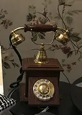
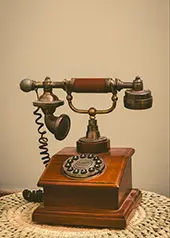
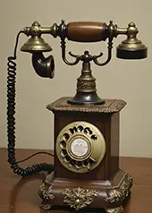
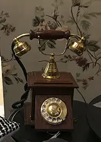
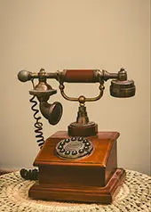
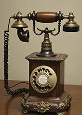

Diese alten Telefone sind eindrucksvolle Zeitzeugen der frühen Kommunikationstechnik. Mit ihrem charakteristischen Design, schweren Hörern und mechanischen Details erzählen sie von einer Zeit, in der jedes Gespräch noch bewusst geführt wurde. Die sichtbaren Gebrauchsspuren und die natürliche Patina verleihen jedem Telefon seinen einzigartigen Charme.
Ob als dekoratives Objekt, Sammlerstück oder stillvoller Blickfang in Wohnräumen, Büros oder Geschäften, diese antike Telefone verbinden Funktion, Design und Nostalgie auf besondere Weise. Jedes Exemplar ist ein Unikat und wurde sorgfältig ausgewählt.
Bitte beachten Sie: Aufgrund ihres Alters entsprechen die Telefone nicht den heutigen technischen Standards. Kleine Abweichungen und Gebrauchsspuren unterstreichen die Originalität und den historischen Wert.